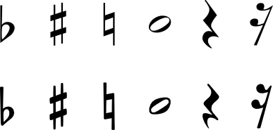
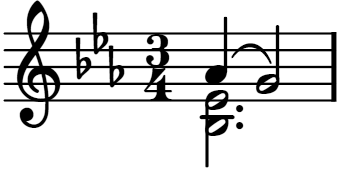
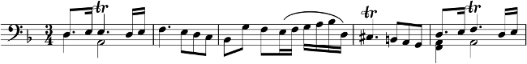
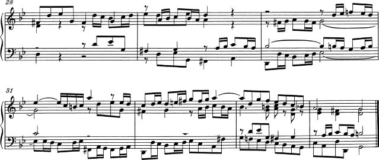
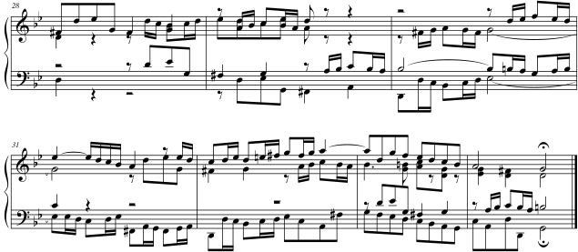

| [Arriba][Índice general][Índice][ ? ] |
LilyPond — Ensayo sobre grabado musical automatizado
|
Este ensayo trata de las funciones de grabado musical automatizado dentro de LilyPond version 2.19.65. |
| 1. Grabado musical | ||
| 2. Lista de referencias bibliográficas | ||
| A. GNU Free Documentation License | Licencia de este documento. | |
| B. Índice de LilyPond |
|
Para mayor información sobre la forma en que este manual se relaciona con el resto de la documentación, o para leer este manual en otros formatos, consulte Manuales. Si le falta algún manual, encontrará toda la documentación en http://lilypond.org/. |
| [ << Top ] | [Arriba][Índice general][Índice][ ? ] | [ Lista de referencias bibliográficas >> ] | ||
| [ < Top ] | [ Subir : Top ] | [ Historia de LilyPond > ] | ||
1. Grabado musical
Este ensayo describe porqué se creó LilyPond y cómo puede producir partituras musicales tan bellas.
| 1.1 Historia de LilyPond | ||
| 1.2 Detalles del grabado | ||
| 1.3 Grabado automatizado | ||
| 1.4 Construcción del software | ||
| 1.5 Poner a LilyPond a trabajar | ||
| 1.6 Ejemplos de partituras (BWV 861) |
| [ << Grabado musical ] | [Arriba][Índice general][Índice][ ? ] | [ Lista de referencias bibliográficas >> ] | ||
| [ < Grabado musical ] | [ Subir : Grabado musical ] | [ Detalles del grabado > ] | ||
1.1 Historia de LilyPond
Mucho antes de que LilyPond se hubiese utilizado para editar preciosas partituras de trabajo, antes de que pudiese crear apuntes de cursos universitarios o incluso melodías sencillas, antes de que tuviera una comunidad de usuarios a lo largo y ancho del mundo o incluso un ensayo sobre grabado musical, LilyPond comenzó con esta pregunta:
¿Por qué casi ninguna de las partituras hechas con ordenador consigue la belleza y el equilibrio de una partitura grabada a mano?
Algunas de las respuestas pueden descubrirse examinando cuidadosamente las dos partituras que aparecen debajo. La primera es una hermosa partitura grabada a mano en 1950 y la segunda es una edición moderna hecha con ordenador.
Bärenreiter BA 320, ©1950:

Henle núm. 666, ©2000:

Aquí, las notas son idénticas, y proceden de la primera suite para violoncello solo de Bach, pero el aspecto es distinto, sobre todo si las imprimimos en papel y las observamos desde una cierta distancia. (La versión del presente manual en PDF contiene imágenes de alta resolución, adecuadas para la impresión en papel.) Trate de leer o tocar a partir de cada una de las partituras, y se dará cuenta de que la partitura grabada a mano es más agradable de utilizar. Tiene unas líneas y un movimiento que parecen fluir, y se aprecia como un fragmento de música vivo y palpitante, mientras que la edición más reciente parece fría y mecánica.
Es difícil apreciar inmediatamente en qué consiste la diferencia entra las ediciones antigua y nueva. En ésta todo parece pulcro y ordenado, posiblemente incluso “mejor” a causa de su aspecto computerizado y uniforme. De hecho, esto nos tuvo confundidos durante un cierto tiempo. Queríamos mejorar la notación por ordenador, pero en primer lugar teníamos que averiguar qué era lo que fallaba.
La respuesta radica en la uniformidad precisa y matemática de la edición nueva. Fíjese en la línea divisoria central de cada línea: en la partitura grabada a mano, la posición de estas líneas divisorias tiene una cierta variación natural, mientras que en la versión moderna estas líneas están alineadas de forma casi perfecta. Lo podemos apreciar en estos diagramas simplificados de disposición de las páginas, trazados a partir de la música grabada a mano (a la izquierda) y la generada por ordenador (a la derecha):

En el resultado producido por el ordenador, incluso las cabezas de las notas individuales se alinean en columnas verticales, haciendo desaparecer el contorno de la melodía en una cuadrícula rígida de símbolos musicales.
Existen también otras diferencias: en la edición grabada a mano todas las líneas verticales son más gruesas, las ligaduras quedan más cerca de la cabeza de las notas, y hay más variedad en las inclinaciones de las barras de corchea. Aunque dichos detalles pueden parecer minucias, el resultado es una partitura más fácil de leer. En la partitura de ordenador, todas las líneas son casi idénticas y si el músico levanta la mirada por un momento probablemente se pierda por la página.
LilyPond se diseñó para resolver los problemas que encontramos en el software existente y para crear notación musical bella que emulara a las mejores partituras trazadas a mano.
| [ << Grabado musical ] | [Arriba][Índice general][Índice][ ? ] | [ Lista de referencias bibliográficas >> ] | ||
| [ < Historia de LilyPond ] | [ Subir : Grabado musical ] | [ Fuentes tipográficas de música > ] | ||
1.2 Detalles del grabado
El arte de la tipografía musical recibe el nombre de grabado (en plancha), un término que deriva del proceso manual de la impresión musical1. Hace tan sólo unas décadas, las partituras se hacían cortando y estampando la música en una plancha de zinc o estaño en imagen invertida como en un espejo. La plancha se entintaba, y las depresiones producidas por el grabado y el estampado retenían la tinta. Se formaba una imagen presionando el papel contra la plancha. El cortado y estampado se hacía completamente a mano y era muy fastidioso hacer una corrección, por lo que el grabado había de ser casi perfecto a la primera. El grabado era una habilidad fuertemente especializada; un artesano tenía que cursar unos cinco años de entrenamiento antes de poder obtener el título de maestro grabador, y se necesitaban otros cinco años para adquirir una verdadera habilidad en el oficio.

La inspiración de LilyPond proviene de los grabados manuales tradicionales publicados por los editores de música europeos de y hasta la primera mitad del s.XX, entre ellos Bärenreiter, Duhem, Durand, Hofmeister, Peters y Schott. En ocasiones se consideran a éstos como la cima de la práctica del grabado musical tradicional. Según hemos estudiado estas ediciones, hemos aprendido una gran lección sobre el trabajo implícito en una partitura bien trazada, y los aspectos de ella que queríamos tratar de imitar en LilyPond.
| Fuentes tipográficas de música | ||
| Espaciado óptico | ||
| Líneas adicionales | ||
| Escalado óptico | ||
| ¿Para qué tanto esfuerzo? |
| [ << Grabado musical ] | [Arriba][Índice general][Índice][ ? ] | [ Lista de referencias bibliográficas >> ] | ||
| [ < Detalles del grabado ] | [ Subir : Detalles del grabado ] | [ Espaciado óptico > ] | ||
Fuentes tipográficas de música
Las imágenes de abajo ilustran algunas de las diferencias entre el grabado musical tradicional y la típica impresión por ordenador. La imagen de la izquierda presenta un símbolo de bemol procedente de una edición Bärenreiter grabada a mano, mientras que la imagen de la derecha representa un símbolo procedente de una edición de la misma música, publicada en el año 2000. Aunque las dos imágenes están impresas en el mismo tono de tinta, la versión antigua parece más oscura: las líneas del pentagrama son más gruesas, y el bemol de Bärenreiter tiene una apariencia pesada y redonda, casi voluptuosa. La imagen escaneada de la derecha, en cambio, tiene líneas más finas y una disposición simple con esquinas afiladas.
 |  | |
| Bärenreiter (1950) | Henle (2000) |
Cuando quisimos escribir un programa de ordenador para crear tipografía musical, no existían fuentes tipográficas musicales que estuviesen libremente disponibles y que igualaran la elegancia de nuestras partituras favoritas. Sin desanimarnos, creamos una fuente de símbolos musicales, apoyándonos en música grabada a mano muy bien impresa. La experiencia nos ayudó a desarrollar un gusto tipográfico, y nos hizo apreciar los sutiles detalles del diseño. Sin esa experiencia, no nos habríamos dado cuenta de lo feas que eran las fuentes que en un principio habíamos admirado.
A continuación podemos ver una muestra de dos fuentes tipográficas de música: el conjunto de arriba es la fuente predeterminada del programa Sibelius (la fuente Opus), y el conjunto inferior es nuestra propia fuente de LilyPond.

Los símbolos de LilyPond son más pesados y sus pesos son más consistentes, lo que los hace más fáciles de leer. Las terminaciones finas, como las de los lados del silencio de negra, no deben finalizar en puntas afiladas, sino de forma redonda. esto se debe a que las esquinas afiladas de los punzones de grabado son frágiles y se desgastan con rapidez al estampar con ellos sobre el metal. Si se toma en su conjunto, la negrura de la fuente se debe ajustar cuidadosamente en relación con el grosor de las líneas, las barras y las ligaduras para dar una impresión general fuerte y pesada pero equilibrada.
Observe también que la cabeza de nuestra blanca no es elíptica sino ligeramente romboidal. El trazo vertical del símbolo del bemol se asemeja al trazo de un pincel, haciéndose más ancho en la parte superior. El sostenido y el becuadro son más fáciles de distinguir desde una cierta distancia porque sus ángulos tienen distinta inclinación y los trazos verticales son más pesados.
| [ << Grabado musical ] | [Arriba][Índice general][Índice][ ? ] | [ Lista de referencias bibliográficas >> ] | ||
| [ < Fuentes tipográficas de música ] | [ Subir : Detalles del grabado ] | [ Líneas adicionales > ] | ||
Espaciado óptico
En el espaciado, la distribución del espacio debe reflejar las duraciones de las figuras. Sin embargo, como vimos en la suite de Bach más arriba, muchas partituras modernas se atañen a las duraciones con precisión matemática, lo que lleva a un resultado pobre. En el siguiente ejemplo se muestra un motivo impreso dos veces: la primera vez utilizando espaciado matemático exacto, y la segunda con correcciones. ¿Cuál prefiere?
Cada compás de este fragmento utiliza figuras de duración constante. El espaciado debe reflejarlo. Desgraciadamente, el ojo nos traiciona; no sólo aprecia la distancia entre la cabeza de las figuras, también tiene en cuenta la distancia entre las plicas consecutivas. Como resultado, las notas de una combinación plica arriba plica abajo deben separarse más, y las notas de una combinación plica abajo plica arriba se deben colocar más juntas, dependiendo siempre de las posiciones verticales relativas de las notas. Los dos compases inferiores están impresos con esta corrección; los dos superiores, por el contrario, forman conglomerados de notas plica abajo plica arriba. Un grabador maestro ajustaría el espacio según se necesite para agradar al ojo.
Los algoritmos de espaciado de LilyPond tienen incluso en cuenta a las líneas divisorias que es la razón por la que la última plica dirigida hacia arriba en el ejemplo bien espaciado ha recibido un poco más de espacio antes de la línea divisoria para evitar que tenga un aspecto aglomerado. Una plica hacia abajo no necesitaría este ajuste.
| [ << Grabado musical ] | [Arriba][Índice general][Índice][ ? ] | [ Lista de referencias bibliográficas >> ] | ||
| [ < Espaciado óptico ] | [ Subir : Detalles del grabado ] | [ Escalado óptico > ] | ||
Líneas adicionales
Las líneas adicionales presentan un desafío tipográfico: hacen más difícil juntar los símbolos musicales y deben ser lo bastante claras como para identificar la altura de la nota de un vistazo. En el ejemplo siguiente, vemos que las líneas adicionales deben ser más gruesas que las líneas normales del pentagrama y que un grabador experto acortará una línea adicional para permitir un espaciado más cercano con las alteraciones accidentales. Hemos incluido esta posibilidad en el grabado que hace LilyPond.
 |  |
| [ << Grabado musical ] | [Arriba][Índice general][Índice][ ? ] | [ Lista de referencias bibliográficas >> ] | ||
| [ < Líneas adicionales ] | [ Subir : Detalles del grabado ] | [ ¿Para qué tanto esfuerzo? > ] | ||
Escalado óptico
Puede ser necesario imprimir la música en distintos tamaños. Originalmente esto se conseguía mediante la creación de punzones de estampado en cada uno de los tamaños necesarios, lo que significaba que cada punzón estaba diseñado para presentar el mejor aspecto a ese tamaño. Con la llegada de las fuentes tipográficas digitales, un solo diseño se puede escalar matemáticamente a cualquier tamaño, lo que es sin duda muy conveniente, pero a los tamaños menores los glifos aparecen en tipo muy delgado.
En LilyPond hemos creado las fuentes tipográficas en un cierto rango de pesos que corresponden a la correspondiente variedad de tamaños de notación musical. He aquí un grabado musical de LilyPond a un tamaño de pentagrama de 26:

y éste es el mismo fragmento a un tamaño de 11, aumentado posteriormente en un 236% para que se imprima al mismo tamaño que el ejemplo anterior:

A tamaños más pequeños, LilyPond utiliza líneas proporcionalmente más gruesas de manera que la música siga leyéndose con comodidad.
This also allows staves of different sizes to coexist peacefully when used together on the same page:
![[image of music]](73/lily-f7887b3b.png)
| [ << Grabado musical ] | [Arriba][Índice general][Índice][ ? ] | [ Lista de referencias bibliográficas >> ] | ||
| [ < Escalado óptico ] | [ Subir : Detalles del grabado ] | [ Grabado automatizado > ] | ||
¿Para qué tanto esfuerzo?
Los músicos están normalmente más absortos en su interpretación que en el estudio del aspecto gráfico de una partitura impresa, por lo que las minucias sobre los detalles tipográficos pueden parecer académicas. Pero no lo son. La música impresa es material de interpretación: todo se hace para ayudar al músico a tocar mejor, y todo aquello que no está claro o no es agradable se convierte en un obstáculo.
La música grabada de forma tradicional utiliza símbolos gruesos sobre pautas de líneas pesadas para producir una notación de aspecto fuerte y equilibrado que adquiere gran presencia cuando el papel está lejos del lector: por ejemplo, sobre un atril. Una distribución cuidadosa del espacio vacío permite que la música se pueda disponer de forma muy apretada sin aglomerar los símbolos entre sí. El resultado reduce a un mínimo el número de saltos de página, lo que es una gran ventaja.
Ésta es una característica común de la tipografía. La disposición sobre la página debe ser bonita, no sólo por sí misma, sino especialmente porque ayuda al lector en su cometido. Para las partituras musicales esto es de doble importancia porque los músicos tienen una cantidad de atención limitada. Cuanta menos atención necesitan para leer, más pueden centrarse en tocar la música. En otras palabras, una mejor tipografía lleva a mejores interpretaciones.
Estos ejemplos demuestran que la tipografía musical es un arte sutil y complejo, y que producirla requiere una considerable experiencia, algo que los músicos no suelen tener. LilyPond es el resultado de nuestro esfuerzo para llevar a la era de los ordenadores la excelencia gráfica de la música grabada a mano, y ponerla a disposición de los músicos normales. Hemos ajustado nuestros algoritmos, el diseño de nuestras fuentes tipográficas y los valores predeterminados del programa para producir una impresión que iguala en calidad a la de las antiguas ediciones que tanto nos gusta ver y a partir de las que tanto nos gusta tocar.
| [ << Grabado musical ] | [Arriba][Índice general][Índice][ ? ] | [ Lista de referencias bibliográficas >> ] | ||
| [ < ¿Para qué tanto esfuerzo? ] | [ Subir : Grabado musical ] | [ Concursos de belleza > ] | ||
1.3 Grabado automatizado
Aquí describimos lo que se necesita para crear un software que pueda recrear la disposición de las partituras grabadas: un método de explicar las buenas disposiciones al ordenador, y gran cantidad de comparaciones detalladas con grabados de música reales.
| Concursos de belleza | ||
| Mejoras por medio de pruebas | ||
| Hacer las cosas bien |
| [ << Grabado musical ] | [Arriba][Índice general][Índice][ ? ] | [ Lista de referencias bibliográficas >> ] | ||
| [ < Grabado automatizado ] | [ Subir : Grabado automatizado ] | [ Mejoras por medio de pruebas > ] | ||
Concursos de belleza
¿Cómo realizamos las decisiones de formateo? En otras palabras, ¿cuál de las tres configuraciones elegiríamos para la siguiente ligadura?
![[image of music]](b8/lily-0179c477.png)
Están a nuestra disposición unos cuantos libros sobre el arte del grabado musical. Desgraciadamente, contienen unas sencillas reglas prácticas y unos pocos ejemplos. Dichas reglas pueden ser instructivas, pero están muy lejos de constituir un algoritmo preparado para poderlo implementar dentro de un programa. Siguiendo las instrucciones de esta literatura nos lleva a algoritmos con gran cantidad de excepciones codificadas manualmente. Hacer todo este análisis de casos es mucho trabajo, y a menudo no todos los casos están cubiertos completamente:

(Fuente de la imagen: Ted Ross, The Art of Music Engraving)
En lugar de intentar escribir detalladas reglas de disposición para cada uno de los escenarios posibles, únicamente tenemos que describir los objetivos lo suficientemente bien como para que LilyPond pueda juzgar el nivel de atractivo visual de varias alternativas. Después, para cada posible configuración calculamos una puntuación de fealdad y seleccionamos la configuración menos fea.
Por ejemplo, tenemos aquí tres configuraciones posibles para la ligadura, y LilyPond ha otorgado una puntuación a cada una en ‘puntos de fealdad’. El primer ejemplo obtiene 15.39 puntos por rozar la cabeza de una de las figuras:
El segundo es mejor, pero la ligadura no comienza ni termina sobre la cabeza de las notas. Obtiene 1.71 puntos por el lado izquierdo y 9.37 puntos por el lado derecho, más otros 2 puntos porque la ligadura asciende mientras la melodía desciende, dando un total de 13.08 puntos de fealdad:
![[image of music]](8a/lily-1a506dd8.png)
La ligadura final obtiene 10.04 puntos por el salto de la derecha y 2 puntos por la inclinación hacia arriba, pero es la más atractiva de las tres configuraciones, así que LilyPond selecciona ésta:
![[image of music]](83/lily-7d0e74a1.png)
Esta técnica es bastante general, y se utiliza para tomar decisiones óptimas para la configuración de las barras, ligaduras y puntillos de los acordes, saltos de línea y saltos de página. El resultado de estas decisiones se puede juzgar por comparación con grabados reales.
| [ << Grabado musical ] | [Arriba][Índice general][Índice][ ? ] | [ Lista de referencias bibliográficas >> ] | ||
| [ < Concursos de belleza ] | [ Subir : Grabado automatizado ] | [ Hacer las cosas bien > ] | ||
Mejoras por medio de pruebas
La salida de LilyPond ha mejorado paulatinamente con el tiempo, y continúa mejorando mediante su comparación con partituras grabadas a mano.
Por ejemplo, he aquí una línea de una pieza utilizada como banco de pruebas procedente de una edición realizada a mano (Bärenreiter BA320):
y el mismo fragmento grabado tal y como lo hacía una versión muy antigua de LilyPond (versión 1.4, mayo de 2001):
Ciertamente, la salida de LilyPond 1.4 es legible pero una comparación detenida con la partitura hecha a mano mostraba numerosos errores en los detalles de formateo:

- hay demasiado espacio antes de la indicación de compás
- las plicas de las notas unidas por una barra son muy largas
- los compases segundo y cuarto son muy estrechos
- la ligadura tiene un aspecto extraño
- el símbolo del trino es demasiado grande
- las plicas son delgadas
(También faltaban dos cabezas de nota y varias anotaciones editoriales, y ¡la altura de una nota era incorrecta!)
Mediante el ajuste de las reglas de disposición y del diseño de la fuente tipográfica, la salida ha mejorado de forma considerable. Compare la misma partitura de referencia y la salida de la versión actual de LilyPond (2.19.65):
![[image of music]](64/lily-9356cf70.png)
La salida actual no es un clon de la edición de referencia, pero está mucho más cerca de la calidad de publicación que la salida más antigua.
| [ << Grabado musical ] | [Arriba][Índice general][Índice][ ? ] | [ Lista de referencias bibliográficas >> ] | ||
| [ < Mejoras por medio de pruebas ] | [ Subir : Grabado automatizado ] | [ Construcción del software > ] | ||
Hacer las cosas bien
También podemos medir la capacidad de LilyPond para tomar decisiones de grabado musical automáticamente comparando su salida con la de un producto de software comercial. En este caso hemos elegido Finale 2008, que es uno de los editores de partituras comerciales más populares, especialmente en los Estados Unidos. Sibelius es su principal competidor y parece tener especial presencia en el mercado europeo.
Para nuestra comparación elegimos la fuga en Sol menor del Clave bien temperado de Bach, libro I, BWV 861, cuyo sujeto inicial es
![[image of music]](0e/lily-96550f49.png)
Hemos realizado nuestra comparación grabando los últimos siete compases de la pieza (28 al 34) en Finale y en LilyPond. Éste es el punto de la pieza en que el sujeto vuelve a aparecer en un estrecho a tres partes y conduce a la sección conclusiva. En la versión de Finale, hemos resistido la tentación de hacer cualquier ajuste sobre la salida predeterminada porque tratamos de mostrar qué cosas hace bien cada programa sin ayuda. Las únicas manipulaciones de importancia que hemos hecho ha sido los ajustes del tamaño de la página para que se corresponda con este ensayo y forzar que la música quepa en dos sistemas para facilitar la comparación. De forma predeterminada, Finale habría compuesto dos sistemas de tres compases cada uno y un último sistema de plena anchura con un solo compás.
Muchas de las diferencias entre los dos grabados son visibles en los compases 28 al 29, como se muestra aquí con Finale en primer lugar y LilyPond en segundo:

Entre algunos de los puntos negativos de la salida sin retocar de Finale se encuentran los siguientes:
- Casi todas las barras se salen demasiado del pentagrama. Una barra que apunta hacia el centro del pentagrama debe tener una longitud de una octava aproximadamente, pero los grabadores acortan esta longitud cuando la barra apunta hacia fuera de la pauta en música de varias voces. El barrado de Finale se puede mejorar fácilmente con su complemento de barras de Patterson, pero hemos decidido saltarnos ese paso para este ejemplo.
- Finale no ajusta las posiciones de las cabezas que se bloquean mutuamente, lo que hace a la música extremadamente difícil de leer cuando las voces superior e inferior intercambian temporalmente sus posiciones:
- Finale ha colocado todos los silencios en alturas fijas sobre el pentagrama. El usuario es libre de ajustarlos según se necesite, pero el programa no hace ningún intento de tener en consideración el contenido de la otra voz. Por suerte, en este ejemplo no se producen verdaderas colisiones entre notas y silencios, pero ello tiene que ver más con las posiciones de las notas que con otra cosa. Dicho de otro modo, Bach se merece algo más de crédito para evitar una colisión completa que la que Finale le concede.
Este ejemplo no pretende sugerir que Finale no se pueda usar para producir resultados con calidad de producción. Por el contrario, en las manos de un usuario hábil puede hacerlo y de hecho lo hace, pero requiere destreza y tiempo. Una de las diferencias fundamentales entre LilyPond y los editores de partituras comerciales es que LilyPond aspira a reducir la cantidad de intervención humana a un mínimo absoluto, mientras que otros paquetes pretenden ofrecer un interfaz atractivo en el que hacer este tipo de ediciones.
Una omisión particularmente flagrante que hemos encontrado por parte de Finale es un bemol en el compás 33:

El símbolo del bemol es necesario para cancelar el becuadro que está en el mismo compás, pero Finale lo omite porque aparece en una voz distinta. De forma que además de ejecutar un complemento de barrado y comprobar el espaciado sobre las cabezas de nota y los silencios, el usuario también tiene que comprobar las alteraciones entre voces cruzadas para cada compás si pretende evitar la interrupción de un ensayo a causa de un error en la edición de la partitura.
Si está interesado en examinar estos ejemplos con más detalle, el ejemplo de siete compases completo está al final de este ensayo junto a cuatro ediciones publicadas distintas. Un examen detenido revela que hay una cierta variación aceptable entre los grabados manuales, pero también que LilyPond se compara de forma razonablemente buena con este rango aceptable. Aún existen algunos inconvenientes en la salida de LilyPond, por ejemplo, parece ser un tanto agresiva acortando algunas de las plicas, así que aún hay margen para un desarrollo y ajuste fino posteriores.
Por supuesto, la tipografía se basa en el juicio humano sobre la apariencia, de manera que las personas no se pueden sustituir por completo. Con todo, gran parte del trabajo tedioso se puede automatizar. Si LilyPond resuelve correctamente la mayor parte de las situaciones más comunes, esto ya sería una enorme ventaja sobre los programas existentes. Con el transcurso de los años, el software se puede refinar de forma que realice cada vez más cosas automáticamente, de forma que los ajustes manuales sean también cada vez menos necesarios. Donde se necesitan ajustes manuales, la estructura de LilyPond está diseñada teniendo en mente esa flexibilidad.
| [ << Grabado musical ] | [Arriba][Índice general][Índice][ ? ] | [ Lista de referencias bibliográficas >> ] | ||
| [ < Hacer las cosas bien ] | [ Subir : Grabado musical ] | [ Representación musical > ] | ||
1.4 Construcción del software
Esta sección describe algunas de las decisiones de programación que hicimos cuando diseñamos el programa LilyPond.
| Representación musical | ||
| ¿Qué símbolos grabar? | ||
| Arquitectura flexible |
| [ << Grabado musical ] | [Arriba][Índice general][Índice][ ? ] | [ Lista de referencias bibliográficas >> ] | ||
| [ < Construcción del software ] | [ Subir : Construcción del software ] | [ ¿Qué símbolos grabar? > ] | ||
Representación musical
Idealmente, el formato de entrada de cualquier sistema de formateado de alto nivel es una descripción abstracta del contenido. En este caso, eso sería la propia música. Ello presenta un enorme problema: ¿cómo podemos definir qué es la música realmente? En lugar de buscar una respuesta, le hemos dado la vuelta a la pregunta. Escribimos un programa capaz de producir música impresa, y luego ajustamos el formato de forma que sea lo más escueto posible. Cuando el formato ya no se puede recortar más, por definición nos estamos quedando con el propio contenido. Nuestro programa sirve como una definición formal de un documento musical.
La sintaxis es también el interfaz de usuario de LilyPond, de aquí que sea tan fácil teclear:
{
c'4 d'8
}
para crear un Do central negra (Do 4) y un Re por encima del Do central, corchea (Re 4).
![[image of music]](7f/lily-00c5b815.png)
A una escala microscópica, esta sintaxis es fácil de usar. A una escala mayor, la sintaxis necesita también una estructura. ¿De qué otra forma podríamos introducir piezas complejas como sinfonías u óperas? La estructura se forma por medio del concepto de expresiones musicales: combinando pequeños fragmentos de música dentro de otros más grandes, se puede expresar una música más compleja. Por ejemplo:
f'4
![[image of music]](5d/lily-fb3d5810.png)
Las notas simultáneas se pueden construir encerrándolas dentro de
<< y >>:
<<c4 d4 e4>>
![[image of music]](75/lily-41f9d8ad.png)
La expresión se pone en secuencia encerrándola dentro de llaves
{ … }:
{ f4 <<c4 d4 e4>> }
![[image of music]](c5/lily-e20e6528.png)
Esto es también una expresión, y así se puede combinar de nuevo con
otra expresión simultánea (una blanca) utilizando <<, \\
y >>:
<< g2 \\ { f4 <<c4 d4 e4>> } >>
![[image of music]](8a/lily-c40cca54.png)
Tales estructuras recursivas se pueden especificar limpia y formalmente dentro de una gramática independiente del contexto. El código del analizador sintáctico también se genera a partir de esta gramática. Dicho de otra forma, la sintaxis de LilyPond está definida claramente y sin ambigüedades.
Los interfaces de usuario y la sintaxis son aquello que la gente ve y con lo que trata más frecuentemente. Son, en parte, cuestión de gusto, y también objeto de mucha discusión. Aunque las discusiones sobre el gusto tienen su mérito, no son muy productivas. Bajo el punto de vista más amplio de LilyPond, la importancia de la sintaxis de la entrada es pequeña: inventarse una sintaxis limpia es fácil, pero escribir un código de formatead que sea decente es mucho más difícil. Esto queda ilustrado por la cantidad de líneas que están dedicadas a los componentes respectivos: el análisis sintáctico y la representación se llevan menos del 10% del código fuente.
Cuando estábamos diseñando las estructuras utilizadas dentro de LilyPond, tomamos algunas decisiones de forma diferente a como es aparente en otros programas. Consideremos la naturaleza jerárquica de la notación musical:
![[image of music]](cd/lily-1761944a.png)
En este caso, hay notas agrupadas en acordes que están dentro de compases, que pertenecen a pentagramas. Esto se parece a una estructura ordenada de cajas anidadas unas dentro de otras:

Desgraciadamente la estructura resulta ordenada porque está basada en algunas suposiciones excesivamente restrictivas. Este extremo se hace aparente si tenemos en cuenta un ejemplo musical más complejo:
![[image of music]](9f/lily-594eb061.png)
En este ejemplo, los pentagramas parecen iniciarse y terminar a capricho, las voces saltan de un pentagrama a otro, y las pautas tienen tipos de compás diferentes. Muchos programas se las ven y se las desean para reproducir este ejemplo porque están construidos sobre la estructura de las cajas anidadas. Con LilyPond, por el contrario, hemos tratado de conservar el formato del código de entrada y la estructura lo más flexibles posible.
| [ << Grabado musical ] | [Arriba][Índice general][Índice][ ? ] | [ Lista de referencias bibliográficas >> ] | ||
| [ < Representación musical ] | [ Subir : Construcción del software ] | [ Arquitectura flexible > ] | ||
¿Qué símbolos grabar?
El proceso de formateo decide dónde colocar los símbolos. Sin embargo, esto sólo puede hacerse una vez que se ha decidido qué símbolos se deben imprimir: en otras palabras, qué notación utilizar.
La notación musical común es un sistema de registro de la música que ha evolucionado durante los últimos mil años. La forma que es hoy día de uso común data del Renacimiento temprano. Aunque la forma básica (es decir, puntos sobre una pauta de cinco líneas) no ha cambiado, los detalles aún evolucionan para expresar las innovaciones de la notación contemporánea. De aquí que la notación musical común abarque unos quinientos años de música. El ámbito de sus aplicaciones comprende desde melodías monofónicas hasta monstruosos contrapuntos para gran orquesta.
¿Cómo podemos ensillar a tal bestia de siete cabezas, y forzarla
dentro de los confines de un programa de ordenador? Nuestra solución
es escindir el problema de la notación (en oposición al grabado, es
decir, a la tipografía) en fragmentos fácilmente digeribles y
programables: cada tipo de símbolo se maneja por parte de un módulo
separado conocido como plug-in. Cada plug-in es completamente modular
e independiente, de manera que cada uno se puede desarrollar y mejorar
por separado Estos plugines reciben el nombre de engravers o
“grabadores”, por analogía con los artesanos que traducían las
ideas musicales en símbolos gráficos.
En el ejemplo siguiente, comenzamos con un plug-in para la cabeza de
las notas, el grabador Note_heads_engraver.
![[image of music]](1e/lily-84b06b5e.png)
A continuación, un grabador del pentagrama, el
Staff_symbol_engraver, añade la pauta:
![[image of music]](d2/lily-eee21123.png)
el grabador de la clave o Clef_engraver define un punto de
referencia para el pentagrama:
y el grabador de las plicas Stem_engraver añade las plicas.
![[image of music]](35/lily-cf2ad001.png)
El grabador Stem_engraver que traza las plicas recibe una
notificación por cada nota que le llega. Cada vez que se ve la cabeza
de una nota (o más, en el caso de un acorde), se crea un objeto plica
y se conecta a la cabeza. Añadiendo grabadores para las barras,
ligaduras, acentos, alteraciones, líneas divisorias, la indicación de
compás y la armadura, obtenemos un fragmento de notación musical
completo.
![[image of music]](52/lily-05260365.png)
Este sistema funciona bien para la música a una voz, pero ¿qué tal para la polifonía? En la notación polifónica, muchas voces pueden llegar a compartir el mismo pentagrama.
![[image of music]](95/lily-a873bdd4.png)
En esta situación, las alteraciones accidentales y la pauta se comparten, pero las plicas, ligaduras, barras, etc., son privadas para cada voz. De aquí que los grabadores deban estar agrupados. Los grabadores de la cabeza de las notas, plicas, ligaduras, etc., van a un grupo llamado ‘contexto de voz’, mientras que los grabadores de la armadura, las alteraciones, los compases, etc., van a un grupo llamado ‘contexto de pauta’. En el caso de la polifonía, un solo contexto de pauta contiene más de un contexto de voz. De forma similar, varios contextos de pentagrama se pueden reunir dentro de un único contexto de partitura. El contexto de partitura es el contexto de notación del nivel más alto que hay.
![[image of music]](ba/lily-d2d5c2cf.png)
Véase también
Referencia de funcionamiento interno: Contexts.
| [ << Grabado musical ] | [Arriba][Índice general][Índice][ ? ] | [ Lista de referencias bibliográficas >> ] | ||
| [ < ¿Qué símbolos grabar? ] | [ Subir : Construcción del software ] | [ Poner a LilyPond a trabajar > ] | ||
Arquitectura flexible
Al principio escribimos el programa LilyPond completamente en el lenguaje de programación C++; la funcionalidad del programa estaba grabada en piedra por parte de los desarrolladores. Se comprobó que esto no era satisfactorio por unas cuantas razones:
- Cuando LilyPond comete errores, los usuarios necesitan sobreescribir las decisiones de formateo. Por tanto, el usuario debe tener acceso al motor de formateo. De aquí que las reglas y los ajustes predeterminados no se puedan fijar por nuestra parte en el tiempo de compilación sino que deben estar accesibles para los usuarios en el tiempo de ejecución.
- El grabado musical es cuestión de juicio visual, y por tanto está en el terreno del buen gusto. Por más entendidos que pretendamos ser, nuestros usuarios siempre podrían discrepar de nuestras decisiones personales. Por ello, las definiciones del estilo tipográfico debe también ser accesible para el usuario.
- Finalmente, nos encontramos refinando continuamente los algoritmos de formateo, por lo que necesitamos un enfoque flexible para las reglas. El lenguaje C++ fuerza un cierto método de agrupación de las reglas que no está preparado para aplicarse al formateo de la notación musical.
Estos programas se han solucionado integrando un intérprete para el lenguaje de programación Scheme y reescribiendo partes de LilyPond en Scheme. La arquitectura de formateo actual está construida alrededor de la noción de objetos gráficos, descritos por medio de variables y funciones de Scheme. Esta arquitectura coordina las reglas de formateo, el estilo tipográfico y las decisiones de formateo individuales. El usuario tiene acceso directo a la mayoría de esos controles.
Las variables de Scheme controlan las decisiones de disposición en la página. Por ejemplo, muchos objetos gráficos tienen una variable de dirección que codifica la elección entre arriba y abajo (o izquierda y derecha). A continuación vemos dos acordes, con acentos y símbolos de arpegio. En el primer acorde, los objetos gráficos tienen todas las direcciones hacia abajo (o hacia la izquierda). El segundo acorde tiene todas las direcciones hacia arriba (o hacia la derecha).
![[image of music]](80/lily-ee8b9274.png)
El proceso de dar formato a una partitura comprende la lectura y escritura de las variables de los objetos gráficos. Algunas variables tienen un valor preestablecido. Por ejemplo, el grosor de muchas líneas (una característica del estilo tipográfico) es una variable con un valor preestablecido. Somos libres de alterar este valor, dando a nuestra partitura una impresión tipográfica distinta.
![[image of music]](61/lily-f9243c39.png)
Las reglas de formateado también son variables preestablecidas: cada objeto tiene variables que contienen procedimientos. Estos procedimientos realizan el formateo propiamente dicho, y mediante la sustitución de unos u otros, podemos modificar el aspecto de los objetos. En el ejemplo siguiente, la regla que gobierna qué objetos de cabeza se utilizan para producir el símbolo de la cabeza, se cambia a lo largo del fragmento musical.
| [ << Grabado musical ] | [Arriba][Índice general][Índice][ ? ] | [ Lista de referencias bibliográficas >> ] | ||
| [ < Arquitectura flexible ] | [ Subir : Grabado musical ] | [ Ejemplos de partituras (BWV 861) > ] | ||
1.5 Poner a LilyPond a trabajar
Escribimos LilyPond como un experimento sobre cómo condensar el arte del grabado musical dentro de un programa de ordenador. Gracias a todo ese duro trabajo, ahora el programa se puede utilizar para que realice muchas tareas útiles. La aplicación más simple es la impresión de notas.
![[image of music]](71/lily-4dcc4a41.png)
Añadiendo nombres de acorde y la letra de la canción obtenemos una hoja guía de acordes.
También puede imprimirse notación polifónica y música para piano. El ejemplo siguiente combina unas pocas construcciones algo más exóticas.
Los fragmentos que se muestran arriba se han escrito a mano, pero esto no es obligatorio. Puesto que el motor de formateado es casi totalmente automático, puede servir como un medio de salida para otros programas que manipulan música. Por ejemplo, también se puede usar para convertir bases de datos de fragmentos musicales en imágenes orientadas a su utilización en páginas web y presentaciones multimedia.
Este manual muestra también una aplicación: el formato de entrada
es texto, y puede ser por tanto fácilmente empotrado dentro de
otros formatos basados en texto como LaTeX, HTML, o en el caso
de este manual, Texinfo. Utilizando el programa
lilypond-book, que viene incluido con LilyPond, los
fragmentos de entrada se pueden reemplazar por imágenes de la
música en los archivos de salida PDF o HTML resultantes. Otro
ejemplo es la extensión (de terceras partes) OOoLilyPond para
OpenOffice.org o LibreOffice, que hace de la inclusión de ejemplos
musicales dentro de los documentos, una tarea extremadamente
sencilla.
Para ver más ejemplos de LilyPond en acción, la documentación completa, y el programa propiamente dicho, visite nuestra página principal: www.lilypond.org.
1.6 Ejemplos de partituras (BWV 861)
Esta sección contiene cuatro grabados musicales de referencia y dos versiones grabadas por ordenador de la fuga en Sol menor del libro I del Clave Bien Temperado, BWV 861, de Bach (los últimos siete compases).
Bärenreiter BA5070 (Neue Ausgabe Sämtlicher Werke, Serie V, Band 6.1, 1989):

Bärenreiter BA5070 (Neue Ausgabe Sämtlicher Werke, Serie V, Band 6.1, 1989), una fuente musical alternativa. Aparte de las diferencias textuales, esto presenta ligeras variaciones en las decisiones de grabado, incluso de la misma editorial y edición:
Breitkopf & Härtel, editado por Ferruccio Busoni (Wiesbaden, 1894), disponible también a través de la Biblioteca Musical Petrucci (IMSLP #22081). Las indicaciones editoriales (digitaciones, articulaciones, etc.) se han suprimido para una comparación más clara con las otras ediciones que presentamos aquí:

Edición Bach-Gesellschaft (Leipzig, 1866), disponible a través de la Biblioteca Musical Petrucci (IMSPL #02221):

Finale 2008:
LilyPond, versión 2.19.65:
![[image of music]](9a/lily-c16047db.png)
| [ << Grabado musical ] | [Arriba][Índice general][Índice][ ? ] | [ GNU Free Documentation License >> ] | ||
| [ < Ejemplos de partituras (BWV 861) ] | [ Subir : Top ] | [ Lista bibliográfica resumida > ] | ||
2. Lista de referencias bibliográficas
A continuación presentamos algunas listas de referencias que se utilizan en LilyPond.
| 2.1 Lista bibliográfica resumida | ||
| 2.2 Lista bibliográfica ampliada |
2.1 Lista bibliográfica resumida
Si tiene necesidad de aprender más acerca de la notación musical, le presentamos a continuación algunos títulos interesantes que puede leer.
- Ignatzek 1995
Klaus Ignatzek, Die Jazzmethode für Klavier. Schott’s Söhne 1995. Mainz, Germany ISBN 3-7957-5140-3.
Instructiva introducción a la interpretación de Jazz al piano. Uno de los primeros capítulos contiene una panorámica de los acordes más comunes de la música de Jazz.
- Gerou 1996
Tom Gerou and Linda Lusk, Essential Dictionary of Music Notation. Alfred Publishing, Van Nuys CA ISBN 0-88284-768-6.
Una lista concisa y ordenada alfabéticamente de los problemas de la composición tipográfica y la notación musical, que abarca la mayor parte de los casos más comunes.
- Gould 2011
Elaine Gould, Behind Bars: the Definitive Guide to Music Notation. Faber Music Ltd. ISBN 0-571-51456-1.
Hals über Kopf: Das Handbuch des Notensatzes. Edition Peters. ISBN 1843670488.
Una completa guía de las reglas y convenciones de la notación musical que cubre todo desde los temas básicos hasta las técnicas más complejas y ofrece una fundamentación exhaustiva de los principios notacionales.
- Read 1968
Gardner Read, Music Notation: A Manual of Modern Practice. Taplinger Publishing, New York (2nd edition).
Una obra estándar sobre notación musical.
- Ross 1987
Ted Ross, Teach yourself the art of music engraving and processing. Hansen House, Miami, Florida 1987.
Este libro trata del grabado musical, es decir, composición tipográfica profesional. Contiene instrucciones sobre el estampado, la utilización de las plumillas y las convenciones notacionales. También son interesantes las secciones sobre los tecnicismos y la historia de la reproducción.
- Schirmer 2001
The G.Schirmer/AMP Manual of Style and Usage. G.Schirmer/AMP, NY, 2001. (Este libro se puede pedir al departamento de alquiler.)
Este manual se centra específicamente en la preparación de los manuscritos para la publicación por Schirmer. Discute muchos detalles que no se pueden encontrar en otros libros de notación más normales. También proporciona una buena idea sobre lo que se necesita para llevar la impresión hasta la calidad editorial.
- Stone 1980
-
Kurt Stone, Music Notation in the Twentieth Century. Norton, New York 1980.
Este libro describe la notación musical para la música seria moderna, pero empieza por una amplia panorámica de las prácticas existentes de la notación tradicional.
2.2 Lista bibliográfica ampliada
Bibliografía sobre edición de música de la Universidad de Colorado
- Willi Apel. The notation of polyphonic music, 900-1600. Cambridge, Mass, 1953. Musical notation.
- Ernest Austin. The Story of Music Printing. Lowe and Brydone Printers, Ltd., London. subject: history of music printing and engraving.
- Anna Maria Busse Berger. Mensuration and proportion signs : origins and evolution. Clarendon Press, Oxford, England, 1993. subject: early notation.
- Roger Bowers. Music & Letters, volume 73. August 1992. Some reflection upon notation and proportion in Monteverdi’s mass and vespers.
- Paul Brainard. Current Musicology. Number 50. July-Dec 1992. Proportional notation in the music of Schutz and his contemporaries in the 17th Century.
- Carl Brandt and Clinton Roemer. Standardized Chord Symbol Notation. Roerick Music Co., Sherman Oaks, CA. subject: musical notation.
- Earle Brown. Musical Quarterly, volume 72. Spring 1986. The notation and performance of new music.
- John Cage. Notations. Something Else Press, New York, 1969. Music, Manuscripts, Facsimiles. Facsimiles of holographs from the Foundation for Contemporary Performance Arts, with text by 269 composers, but rearranged using chance operations.,V).
- J Carter. New Paths in Book Collecting. London, 1934. subject: history of music printing and engraving.
- F. Chrsander. A Sketch of the HIstory of Music printing, from the 15th to the 16th century. 18??. subject: history of music printing and engraving.
- Henry Cowell. Our Inadequate Notation. Modern Music, 4(3), 1927. subject: 20th century notation.
- Henry Cowell. New Musical Resources. Alfred A. Knopf, Inc., New York, 1930. subject: 20th century notation.
- O.F. Deutsch. Music Publishers’ Numbers. London, 1946. subject: history of music printing and engraving.
- Suzanne Eggleston. Notes. New periodicals, 51(2):657(7), Dec 1994. A list of new music periodicals covering the period Jun.-Dec. 1994. Includes aims, formats and a description of the contents of each listed periodical. Includes Music Notation News.
- Hubert Foss. Music Printing. Practical Printing and Binding. Oldhams Press Ltd., Long Acre, London. subject: musical notation.
- Jean Charles Francois. Writing without representation, and unreadable notation.. Perspectives of New Music, 30(1):6(15), Winter 1992. subject: Modern music has outgrown notation. While the computer is used to write down music with accuracy never before achieved, the range of modern sounds has surpassed the relevance of the computer...
- David Fuller. The Journal of Musicology, volume 7. Winter 1989. Notes and inegales unjoined: defending a definition. (written-out inequalities in music notation).
- Virginia Gaburo. Notation. Lingua Press, La Jolla, California, 1977. A Lecture about notation, new ideas about.
- Keith A Hamel. A design for music editing and printing software based on notational syntax. Perspectives of New Music, 27(1):70(14), Winter 1989.
- Archibald Jacob. Musical handwriting : or, How to put music on paper : A handbook for all musicians, professional and amateur. Oxford University Press, London, 1947. subject: Musical notation.
- Harold M Johnson. How to write music manuscript an exercise-method handbook for the music student, copyist, arranger, composer, teacher. Carl Fischer, Inc., New York, 1946. subject: Musical notation –Handbooks, manuals.
- David Evan Jones. Perspectives of New Music. 1990. Speech extrapolated. (includes notation).
- H King. Four Hundred Years of Music Printing. London, 1964. subject: history of music printing and engraving.
- A.H King. The 50th Anniversary of Music Printing. 1973.
- O Kinkeldey. Music And Music Printing in Incunabula. Papers of the Bibliographical Society of America, xxvi:89-118, 1932. subject: history of music printing and engraving.
- D.W. Krummel. Graphic Analysis in Application to Early American Engraved Music. Notes, xvi:213, 9 1958. subject: history of music printing and engraving.
- D.W Krummel. Oblong Format in Early Music Books. The Library, 5th ser., xxvi:312, 1971. subject: history of music printing and engraving.
- Jeffrey Lependorf. ?. Perspectives of New Music, 27(2):232(20), Summer 1989. Contemporary notation for the shakuhachi: a primer for composers. (Tradition and Renewal in the Music of Japan).
- G.A Marco. The Earliest Music Printers of Continental Europe: a Checklist of Facsimiles Illustrating Their Work. Charlottesville, Virginia, 1962. subject: history of music printing and engraving.
- K. Meyer and J O’Meara. The Printing of Music, 1473-1934. The Dolphin, ii:171–207, 1935. subject: history of music printing and engraving.
- Raymond Monelle. Comparative Literature, volume 41. Summer 1989. Music notation and the poetic foot.
- A Novello. Some Account of the Methods of Musick Printing, with Specimens of the Various Sizes of Moveable Types and of Other Matters. London, 1847. subject: history of music printing and engraving.
- C.B Oldman. Collecting Musical First Editions. London, 1934. subject: history of music printing and engraving.
- Carl Parrish. The Notation of Medieval Music. Carl Fischer, Inc., New York, 1946. subject: early notation.
- Carl Parrish. The notation of medieval music. Norton, New York, 1957. Musical notation.
- Harry Patch. Genesis of a Music. University of Wisconsin Press, Madison, 1949. subject: early notation.
- B Pattison. Notes on Early Music Printing. The Library, xix:389-421, 1939. subject: history of music printing and engraving.
- Sandra Pinegar. Current Musicology. Number 53. July 1993. The seeds of notation and music paleography.
- Richard Rastall. The notation of Western music : an introduction. St. Martin’s Press, New York, N.Y., 1982. Musical notation.
- Richard Rastall. Music & Letters, volume 74. November 1993. Equal Temperament Music Notation: The Ailler-Brennink Chromatic Notation. Results and Conclusions of the Music Notation Refor by the Chroma Foundation (book reviews).
- Howard Risatti. New Music Vocabulary. University of Illinois Press, Urbana, Illinois, 1975. A Guide to Notational Signs for Contemporary Music.
- Donald W. Krummel \& Stanley Sadie. Music Printing & Publishing. Macmillan Press, 1990. subject: musical notation.
- Norman E Smith. Current Musicology. Number 45-47. Jan-Dec 1990. The notation of fractio modi.
- W Squire. Notes on Early Music Printing. Bibliographica, iii(99), 1897. subject: history of music printing and engraving.
- Robert Steele. The Earliest English Music Printing. London, 1903. subject: history of music printing and engraving.
- Willy Tappolet. La Notation Musicale. Neuchâtel, Paris, 1947. subject: general notation.
- Leo Treitler. The Journal of Musicology, volume 10. Spring 1992. The unwritten and written transmission, of medieval chant and the start-up of musical notation. Notational practice developed in medieval music to address the written tradition for chant which interacted with the unwritten vocal tradition.
- unknown author. Pictorial History of Music Printing. H. and A. Selmer, Inc., Elhardt, Indiana. subject: history of music printing and engraving.
- M.L West. Music & Letters, volume 75. May 1994. The Babylonian musical notation and the Hurrian melodic texts. A new way of deciphering the ancient Babylonian musical notation.
- C.F. Abdy Williams. The Story of Notation. Charles Scribner’s Sons, New York, 1903. subject: general notation.
- Emmanuel Wintermitz. Musical Autographs from Monteverdi to Hindemith. Princeton University Press, Princeton, 1955. subject: history of music printing and engraving.
Bibliografía sobre notación por ordenador
- G. Assayaag and D. Timis. A Toolbox for music notation. In Proceedings of the 1986 International Computer Music Conference, 1986.
- M. Balaban. A Music Workstation Based on Multiple Hierarchical Views of Music. San Francisco, In Proceedings of the 1988 International Computer Music Conference, 1988.
- Alan Belkin. Macintosh Notation Software: Present and Future. Computer Music Journal, 18(1), 1994. Some music notation systems are analysed for ease of use, MIDI handling. The article ends with a plea for a standard notation format. HWN.
- Herbert Bielawa. Review of Sibelius 7. Computer Music Journal, 1993?. A raving review/tutorial of Sibelius 7 for Acorn. (And did they seriously program a RISC chip in ... assembler ?!) HWN.
- Dorothea Blostein and Lippold Haken. Justification of Printed Music. Communications of the ACM, J34(3):88-99, March 1991. This paper provides an overview of the algorithm used in LIME for spacing individual lines. HWN.
- Dorothea Blostein and Lippold Haken. The Lime Music Editor: A Diagram Editor Involving Complex Translations. Software Practice and Experience, 24(3):289–306, march 1994. A description of various conversions, decisions and issues relating to this interactive editor HWN.
- Nabil Bouzaiene, Loïc Le Gall, and Emmanuel Saint-James. Une bibliothèque pour la notation musicale baroque. LNCS. In EP ’98, 1998. Describes ATYS, an extension to Berlioz, that can mimick handwritten baroque style beams.
- Donald Byrd. A System for Music Printing by Computer. Computers and the Humanities, 8:161-72, 1974.
- Donald Byrd. Music Notation by Computer. PhD thesis, Indiana University, 1985. Describes the SMUT (sic) system for automated music printout.
- Donald Byrd. Music Notation Software and Intelligence. Computer Music Journal, 18(1):17–20, 1994. Byrd (author of Nightingale) shows four problematic fragments of notation, and rants about notation programs that try to exhibit intelligent behaviour. HWN.
- Walter B Hewlett and Eleanor Selfridge-Field. Directory of Computer Assisted Research in Musicology. . Annual editions since 1985, many containing surveys of music typesetting technology. SP.
- Alyssa Lamb. The University of Colorado Music Engraving page. 1996. Webpages about engraving (designed with finale users in mind) (sic) HWN.
- Roger B. Dannenberg. Music Representation: Issues, Techniques, and Systems. Computer Music Journal, 17(3), 1993. This article points to some problems and solutions with music representation. HWN.
- Michael Droettboom. Study of music Notation Description Languages. Technical Report, 2000. GUIDO and lilypond compared. LilyPond wins on practical issues as usability and availability of tools, GUIDO wins on implementation simplicity.
- R. F. Ericson. The DARMS Project: A status report. Computing in the humanities, 9(6):291–298, 1975. Gourlay [gourlay86] writes: A discussion of the design and potential uses of the DARMS music-description language.
- H.S. Field-Richards. Cadenza: A Music Description Language. Computer Music Journal, 17(4), 1993. A description through examples of a music entry language. Apparently it has no formal semantics. There is also no implementation of notation convertor. HWN.
- Miguel Filgueiras. Some Music Typesetting Algorithms. .
- Miguel Filgueiras and José Paulo Leal. Representation and manipulation of music documents in SceX. Electronic Publishing, 6(4):507–518, 1993.
- Miguel Filgueiras. Implementing a Symbolic Music Processing System. 1996.
- Eric Foxley. Music — A language for typesetting music scores. Software — Practice and Experience, 17(8):485-502, 1987. A paper on a simple TROFF preprocessor to typeset music.
- Loïc Le Gall. Création d’une police adaptée à la notation musicale baroque. Master’s thesis, École Estienne, 1997.
- Martin Gieseking. Code-basierte Generierung interaktiver Notengraphik. PhD thesis, Universität Osnabrück, 2001.
- David A. Gomberg. A Computer-Oriented System for Music Printing. PhD thesis, Washington University, 1975.
- David A. Gomberg. A Computer-oriented System for Music Printing. Computing and the Humanities, 11:63-80, march 1977. Gourlay [gourlay86] writes: "A discussion of the problems of representing the conventions of musical notation in computer algorithms.".
- John. S. Gourlay. A language for music printing. Communications of the ACM, 29(5):388–401, 1986. This paper describes the MusiCopy musicsetting system and an input language to go with it.
- John S. Gourlay, A. Parrish, D. Roush, F. Sola, and Y. Tien. Computer Formatting of Music. Technical Report OSU-CISRC-2/87-TR3, Department of Computer and Information Science, The Ohio State University, 1987. This paper discusses the development of algorithms for the formatting of musical scores (from abstract). It also appeared at PROTEXT III, Ireland 1986.
- John S. Gourlay. Spacing a Line of Music,. Technical Report OSU-CISRC-10/87-TR35, Department of Computer and Information Science, The Ohio State University, 1987.
- John Grøver. A computer-oriented description of Music Notation. Part III: Accidental Positioning. Technical Report 135, Department of informatics, University of Oslo, 1989. Placement of accidentals crystallised in an enormous set of rules. Same remarks as for [grover89-twovoices] applies.
- John Grøver. A computer-oriented description of Music Notation. Part I. The Symbol Inventory. Technical Report 133, Department of informatics, University of Oslo, 1989. The goal of this series of reports is a full description of music formatting. As these largely depend on parameters of fonts, it starts with a verbose description of music symbols. The subject is treated backwards: from general rules of typesetting the author tries to extract dimensions for characters, whereas the rules of typesetting (in a particular font) follow from the dimensions of the symbols. His symbols do not match (the stringent) constraints formulated by eg. [wanske].
- John Grøver. A computer-oriented description of Music Notation. Part II: Two Voice Sharing a Staff, Leger Line Rules, Dot Positioning. Technical Report 134, Department of informatics, University of Oslo, 1989. A lot rules for what is in the title are formulated. The descriptions are long and verbose. The verbosity shows that formulating specific rules is not the proper way to approach the problem. Instead, the formulated rules should follow from more general rules, similar to [parrish87-simultaneities].
- Lippold Haken and Dorothea Blostein. The Tilia Music Representation: Extensibility, Abstraction, and Notation Contexts for the Lime Music Editor. Computer Music Journal, 17(3):43–58, 1993.
- Lippold Haken and Dorothea Blostein. A New Algorithm for Horizontal Spacing of Printed Music. Banff, In International Computer Music Conference, pages 118-119, Sept 1995. This describes an algorithm which uses springs between adjacent columns.
- Wael A. Hegazy. On the Implementation of the MusiCopy Language Processor,. Technical Report OSU-CISRC-10/87-TR34, Department of Computer and Information Science, The Ohio State University, 1987. Describes the "parser" which converts MusiCopy MDL to MusiCopy Simultaneities and columns. MDL is short for Music Description Language [gourlay86]. It accepts music descriptions that are organised into measures filled with voices, which are filled with notes. The measures can be arranged simultaneously or sequentially. To address the 2-dimensionality, almost all constructs in MDL must be labeled. MDL uses begin/end markers for attribute values and spanners. Rightfully the author concludes that MusiCopy must administrate a "state" variable containing both properties and current spanning symbols. MusiCopy attaches graphic information to the objects constructed in the input: the elements of the input are partially complete graphic objects.
- Wael A. Hegazy and John S. Gourlay. Optimal line breaking in music. Technical Report OSU-CISRC-8/87-TR33, Department of Computer and Information Science, The Ohio State University,, 1987.
- Wael A. Hegazy and John S. Gourlay. (J. C. van Vliet, editor). Optimal line breaking in music. Cambridge University Press, In Proceedings of the International Conference on Electronic Publishing, Document Manipulation and Typography. Nice (France), April 1988.
- Walter B. Hewlett and Eleanor Selfridge-Field, editors. The Virtual Score; representation, retrieval and restoration. Computing in Musicology. MIT Press, 2001.
- H. H. Hoos, K. A. Hamel, K. Renz, and J. Kilian. The GUIDO Music Notation Format—A Novel Approach for Adequately Representing Score-level Music. In Proceedings of International Computer Music Conference, pages 451–454, 1998.
- Peter S. Langston. Unix music tools at Bellcore. Software — Practice and Experience, 20(S1):47–61, 1990. This paper deals with some command-line tools for music editing and playback.
- Dominique Montel. La gravure de la musique, lisibilité esthétique, respect de l’oevre. Lyon, In Musique \& Notations, 1997.
- Giovanni Müller. Interaktive Bearbeitung konventioneller Musiknotation. PhD thesis, Eidgenössische Technische Hochschule Zürich, 1990. This is about engraver-quality typesetting with computers. It accepts the axiom that notation is too difficult to generate automatically. The result is that a notation program should be a WYSIWYG editor that allows one to tweak everything.
- Han Wen Nienhuys and Jan Nieuwenhuizen. LilyPond, a system for automated music engraving. Firenze, In XIV Colloquium on Musical Informatics, pages 167–172, May 2003.
- Cindy Grande. NIFF6a Notation Interchange File Format. Grande Software Inc., 1995. Specs for NIFF, a reasonably comprehensive but binary format for notation HWN.
- Severo M. Ornstein and John Turner Maxwell III. Mockingbird: A Composer’s Amanuensis. Technical Report CSL-83-2, Xerox Palo Alto Research Center, 3333 Coyote Hill Road, Palo Alto, CA, 94304, January 1983.
- Severo M. Ornstein and John Turner Maxwell III. Mockingbird: A Composer’s Amanuensis. Byte, 9, January 1984. A discussion of an interactive and graphical computer system for music composition.
- Stephen Dowland Page. Computer Tools for Music Information Retrieval. PhD thesis, Dissertation University of Oxford, 1988. Don’t ask Stephen for a copy. Write to the Bodleian Library, Oxford, or to the British Library, instead. SP.
- Allen Parish, Wael A. Hegazy, John S. Gourlay, Dean K. Roush, and F. Javier Sola. MusiCopy: An automated Music Formatting System. Technical Report, 1987.
- A. Parrish and John S. Gourlay. Computer Formatting of Musical Simultaneities,. Technical Report OSU-CISRC-10/87-TR28, Department of Computer and Information Science, The Ohio State University, 1987. This note discusses placement of balls, stems, dots which occur at the same moment ("Simultaneity").
- Steven Powell. Music engraving today. Brichtmark, 2002. A "How Steven uses Finale" manual.
- Gary M. Rader. Creating Printed Music Automatically. Computer, 29(6):61–69, June 1996. Describes a system called MusicEase, and explains that it uses "constraints" (which go unexplained) to automatically position various elements.
- Kai Renz. Algorithms and data structures for a music notation system based on GUIDO music notation. PhD thesis, Universität Darmstadt, 2002.
- René Roelofs. Een Geautomatiseerd Systeem voor het Afdrukken van Muziek. Number 45327. Master’s thesis, Erasmus Universiteit Rotterdam, 1991. This dutch thesis describes a monophonic typesetting system, and focuses on the breaking algorithm, which is taken from Hegazy & Gourlay.
- Joseph Rothstein. Review of Passport Designs’ Encore Music Notation Software. Computer Music Journal, ?.
- Dean K. Roush. Using MusiCopy. Technical Report OSU-CISRC-18/87-TR31, Department of Computer and Information Science, The Ohio State University, 1987. User manual of MusiCopy.
- D. Roush. Music Formatting Guidelines. Technical Report OSU-CISRC-3/88-TR10, Department of Computer and Information Science, The Ohio State University, 1988. Rules on formatting music formulated for use in computers. Mainly distilled from [Ross] HWN.
- Eleanor Selfridge-Field, editor. Beyond MIDI: the handbook of musical codes. MIT Press, 1997. A description of various music interchange formats.
- Donald Sloan. Aspects of Music Representation in HyTime/SMDL. Computer Music Journal, 17(4), 1993. An introduction into HyTime and its score description variant SMDL. With a short example that is quite lengthy in SMDL.
- International Organization for Standardization~(ISO). Information Technology - Document Description and Processing Languages - Standard Music Description Language (SMDL). Number ISO/IEC DIS 10743. 1992.
- Leland Smith. Editing and Printing Music by Computer, volume 17. 1973. Gourlay [gourlay86] writes: A discussion of Smith’s music-printing system SCORE.
- F. Sola. Computer Design of Musical Slurs, Ties and Phrase Marks,. Technical Report OSU-CISRC-10/87-TR32, Department of Computer and Information Science, The Ohio State University, 1987. Overview of a procedure for generating slurs.
- F. Sola and D. Roush. Design of Musical Beams,. Technical Report OSU-CISRC-10/87-TR30, Department of Computer and Information Science, The Ohio State University, 1987. Calculating beam slopes HWN.
- Howard Wright. how to read and write tab: a guide to tab notation. . FAQ (with answers) about TAB, the ASCII variant of Tablature. HWN.
- Geraint Wiggins, Eduardo Miranda, Alaaaan Smaill, and Mitch Harris. A Framework for the evaluation of music representation systems. Computer Music Journal, 17(3), 1993. A categorisation of music representation systems (languages, OO systems etc) split into high level and low level expressiveness. The discussion of Charm and parallel processing for music representation is rather vague. HWN.
Bibliografía sobre grabado musical
- Harald Banter. Akkord Lexikon. Schott’s Söhne, Mainz, Germany, 1987. Comprehensive overview of commonly used chords. Suggests (and uses) a unification for all different kinds of chord names.
- A Barksdale. The Printed Note: 500 Years of Music Printing and Engraving. The Toledo Museum of Art, Toledo, Ohio, January 1957. ‘The exhibition "The Printed Note" attempts to show the various processes used since the second of the 15th century for reproducing music mechanically ... ’. The illustration mostly feature ancient music.
- Laszlo Boehm. Modern Music Notation. G. Schirmer, Inc., New York, 1961. Heussenstamm writes: A handy compact reference book in basic notation.
- H. Elliot Button. System in Musical Notation. Novello and co., London, 1920.
- Herbert Chlapik. Die Praxis des Notengraphikers. Doblinger, 1987. An clearly written book for the casually interested reader. It shows some of the conventions and difficulties in printing music HWN.
- Anthony Donato. Preparing Music Manuscript. Prentice-Hall, Englewood Cliffs, NJ, 1963.
- Donemus. Uitgeven van muziek. Donemus Amsterdam, 1982. Manual on copying for composers and copyists at the Dutch publishing house Donemus. Besides general comments on copying, it also contains a lot of hands-on advice for making performance material for modern pieces.
- William Gamble. Music Engraving and printing. Historical and Technical Treatise. Sir Isaac Pitman & Sons, ltd., 1923. This patriotic book was an attempt to promote and help British music engravers. It is somewhat similar to Hader’s book [hader48] in scope and style, but Gamble focuses more on technical details (Which French punch cutters are worth buying from, etc.), and does not treat typographical details, such as optical illusions. It is available as reprint from Da Capo Press, New York (1971).
- Tom Gerou and Linda Lusk. Essential Dictionary of Music Notation. Alfred Publishing, Van Nuys CA, 1996. A cheap, concise, alphabetically ordered list of typesetting and music (notation) issues with a rather simplistic attitude but in most cases "good-enough" answers JCN.
- Elaine Gould. Behind Bars. Faber Music Ltd., 2011. A comprehensive guide to the rules and conventions of music notation. Covering everything from basic themes to complex techniques and providing a comprehensive grounding in notational principles.
- Elaine Gould. Hals über Kopf. Edition Peters, 2014. Ein vollständiges Regelwerk für den Modernen Notensatz auf höchstem Niveau, ein Meilenstein der Notationskunde und ein Leitfaden für jeden Musiker, der sich auf diesem Gebiet umfassende Kenntnisse aneignen möchte.
- Karl Hader. Aus der Werkstatt eines Notenstechers. Waldheim–Eberle Verlag, Vienna, 1948. Hader was a chief-engraver in a Viennese engraving workshop. This beautiful booklet was intended as an introduction for laymen on the art of engraving. It contains a step by step, in-depth explanation of how to cut and stamp music into zinc plates. It also contains a few compactly formulated rules on musical orthography. Out of print.
- George Heussenstamm. The Norton Manual of Music Notation. Norton, New York, 1987. Hands-on instruction book for copying (ie. handwriting) music. Fairly complete. HWN.
- Klaus Ignatzek. Die Jazzmethode für Klavier 1. Schott, 1995. This book contains a system for denoting chords that is used in LilyPond.
- Andreas Jaschinski, editor. Notation. Number BVK1625. Bärenreiter Verlag, 2000.
- Harold Johnson. How to write music manuscript. Carl Fischer, Inc., New York, 1946.
- Erdhard Karkoshka. Notation in New Music; a critical guide to interpretation and realisation. Praeger Publishers, New York, 1972. (Out of print).
- Mark Mc Grain. Music notation. Hal Leonard Publishing Corporation, 1991. HWN writes: ‘Book’ edition of lecture notes from XXX school of music. The book looks like it is xeroxed from bad printouts. The content has nothing you won’t find in other books like [read] or [heussenstamm].
- mpa. Standard music notation specifications for computer programming.. MPA, December 1996. Pamphlet explaining a few fine points in music font design HWN.
- Richard Rastall. The Notation of Western Music: an Introduction. J. M. Dent \& Sons London, 1983. Interesting account of the evolution and origin of common notation starting from neumes, and ending with modern innovations HWN.
- Gardner Read. Modern Rhythmic Notation. Indiana University Press, 1978. Sound (boring) review of the various hairy rhythmic notations used by avant-garde composers HWN.
- Gardner Read. Music Notation: a Manual of Modern Practice. Taplinger Publishing, New York, 1979. This is as close to the “standard” reference work for music notation issues as one is likely to get.
- Clinton Roemer. The Art of Music Copying. Roerick music co., Sherman Oaks (CA), 2nd edition, 1984. Out of print. Heussenstamm writes: an instructional manual which specializes in methods used in the commercial field.
- Glen Rosecrans. Music Notation Primer. Passantino, New York, 1979. Heussenstamm writes: Limited in scope, similar to [Roemer84].
- Carl A Rosenthal. A Practical Guide to Music Notation. MCA Music, New York, 1967. Heussenstamm writes: Informative in terms of traditional notation. Does not concern score preparation.
- Ted Ross. Teach yourself the art of music engraving and processing. Hansen House, Miami, Florida, 1987.
- Schirmer. The G. Schirmer Manual of Style and Usage. The G. Schirmer Publications Department, New York, 2001. This is the style guide for Schirmer publications. This manual specifically focuses on preparing print for publication by Schirmer. It discusses many details that are not in other, normal notation books. It also gives a good idea of what is necessary to bring printouts to publication quality. It can be ordered from the rental department.
- Kurt Stone. Music Notation in the Twentieth Century. Norton, New York, 1980. Heussenstamm writes: The most important book on notation in recent years.
- Börje Tyboni. Noter Handbok I Traditionell Notering. Gehrmans Musikförlag, Stockholm, 1994. Swedish book on music notation.
- Albert C. Vinci. Fundamentals of Traditional Music Notation. Kent State University Press, 1989.
- Helene Wanske. Musiknotation — Von der Syntax des Notenstichs zum EDV-gesteuerten Notensatz. Schott-Verlag, Mainz, 1988.
- Maxwell Weaner and Walter Boelke. Standard Music Notation Practice. Music Publisher’s Association of the United States Inc, New York, 1993.
- Johannes Wolf. Handbuch der Notationskunde. Breitkopf & Hartel, Leipzig, 1919. Very thorough treatment (in two volumes) of the history of music notation.
| [ << Lista de referencias bibliográficas ] | [Arriba][Índice general][Índice][ ? ] | [ Índice de LilyPond >> ] | ||
| [ < Lista bibliográfica ampliada ] | [ Subir : Top ] | [ Índice de LilyPond > ] | ||
A. GNU Free Documentation License
Version 1.3, 3 November 2008
Copyright © 2000, 2001, 2002, 2007, 2008 Free Software Foundation, Inc. http://fsf.org/ Everyone is permitted to copy and distribute verbatim copies of this license document, but changing it is not allowed. |
-
PREAMBLE
The purpose of this License is to make a manual, textbook, or other functional and useful document free in the sense of freedom: to assure everyone the effective freedom to copy and redistribute it, with or without modifying it, either commercially or noncommercially. Secondarily, this License preserves for the author and publisher a way to get credit for their work, while not being considered responsible for modifications made by others.
This License is a kind of “copyleft”, which means that derivative works of the document must themselves be free in the same sense. It complements the GNU General Public License, which is a copyleft license designed for free software.
We have designed this License in order to use it for manuals for free software, because free software needs free documentation: a free program should come with manuals providing the same freedoms that the software does. But this License is not limited to software manuals; it can be used for any textual work, regardless of subject matter or whether it is published as a printed book. We recommend this License principally for works whose purpose is instruction or reference.
-
APPLICABILITY AND DEFINITIONS
This License applies to any manual or other work, in any medium, that contains a notice placed by the copyright holder saying it can be distributed under the terms of this License. Such a notice grants a world-wide, royalty-free license, unlimited in duration, to use that work under the conditions stated herein. The “Document”, below, refers to any such manual or work. Any member of the public is a licensee, and is addressed as “you”. You accept the license if you copy, modify or distribute the work in a way requiring permission under copyright law.
A “Modified Version” of the Document means any work containing the Document or a portion of it, either copied verbatim, or with modifications and/or translated into another language.
A “Secondary Section” is a named appendix or a front-matter section of the Document that deals exclusively with the relationship of the publishers or authors of the Document to the Document’s overall subject (or to related matters) and contains nothing that could fall directly within that overall subject. (Thus, if the Document is in part a textbook of mathematics, a Secondary Section may not explain any mathematics.) The relationship could be a matter of historical connection with the subject or with related matters, or of legal, commercial, philosophical, ethical or political position regarding them.
The “Invariant Sections” are certain Secondary Sections whose titles are designated, as being those of Invariant Sections, in the notice that says that the Document is released under this License. If a section does not fit the above definition of Secondary then it is not allowed to be designated as Invariant. The Document may contain zero Invariant Sections. If the Document does not identify any Invariant Sections then there are none.
The “Cover Texts” are certain short passages of text that are listed, as Front-Cover Texts or Back-Cover Texts, in the notice that says that the Document is released under this License. A Front-Cover Text may be at most 5 words, and a Back-Cover Text may be at most 25 words.
A “Transparent” copy of the Document means a machine-readable copy, represented in a format whose specification is available to the general public, that is suitable for revising the document straightforwardly with generic text editors or (for images composed of pixels) generic paint programs or (for drawings) some widely available drawing editor, and that is suitable for input to text formatters or for automatic translation to a variety of formats suitable for input to text formatters. A copy made in an otherwise Transparent file format whose markup, or absence of markup, has been arranged to thwart or discourage subsequent modification by readers is not Transparent. An image format is not Transparent if used for any substantial amount of text. A copy that is not “Transparent” is called “Opaque”.
Examples of suitable formats for Transparent copies include plain ASCII without markup, Texinfo input format, LaTeX input format, SGML or XML using a publicly available DTD, and standard-conforming simple HTML, PostScript or PDF designed for human modification. Examples of transparent image formats include PNG, XCF and JPG. Opaque formats include proprietary formats that can be read and edited only by proprietary word processors, SGML or XML for which the DTD and/or processing tools are not generally available, and the machine-generated HTML, PostScript or PDF produced by some word processors for output purposes only.
The “Title Page” means, for a printed book, the title page itself, plus such following pages as are needed to hold, legibly, the material this License requires to appear in the title page. For works in formats which do not have any title page as such, “Title Page” means the text near the most prominent appearance of the work’s title, preceding the beginning of the body of the text.
The “publisher” means any person or entity that distributes copies of the Document to the public.
A section “Entitled XYZ” means a named subunit of the Document whose title either is precisely XYZ or contains XYZ in parentheses following text that translates XYZ in another language. (Here XYZ stands for a specific section name mentioned below, such as “Acknowledgements”, “Dedications”, “Endorsements”, or “History”.) To “Preserve the Title” of such a section when you modify the Document means that it remains a section “Entitled XYZ” according to this definition.
The Document may include Warranty Disclaimers next to the notice which states that this License applies to the Document. These Warranty Disclaimers are considered to be included by reference in this License, but only as regards disclaiming warranties: any other implication that these Warranty Disclaimers may have is void and has no effect on the meaning of this License.
-
VERBATIM COPYING
You may copy and distribute the Document in any medium, either commercially or noncommercially, provided that this License, the copyright notices, and the license notice saying this License applies to the Document are reproduced in all copies, and that you add no other conditions whatsoever to those of this License. You may not use technical measures to obstruct or control the reading or further copying of the copies you make or distribute. However, you may accept compensation in exchange for copies. If you distribute a large enough number of copies you must also follow the conditions in section 3.
You may also lend copies, under the same conditions stated above, and you may publicly display copies.
-
COPYING IN QUANTITY
If you publish printed copies (or copies in media that commonly have printed covers) of the Document, numbering more than 100, and the Document’s license notice requires Cover Texts, you must enclose the copies in covers that carry, clearly and legibly, all these Cover Texts: Front-Cover Texts on the front cover, and Back-Cover Texts on the back cover. Both covers must also clearly and legibly identify you as the publisher of these copies. The front cover must present the full title with all words of the title equally prominent and visible. You may add other material on the covers in addition. Copying with changes limited to the covers, as long as they preserve the title of the Document and satisfy these conditions, can be treated as verbatim copying in other respects.
If the required texts for either cover are too voluminous to fit legibly, you should put the first ones listed (as many as fit reasonably) on the actual cover, and continue the rest onto adjacent pages.
If you publish or distribute Opaque copies of the Document numbering more than 100, you must either include a machine-readable Transparent copy along with each Opaque copy, or state in or with each Opaque copy a computer-network location from which the general network-using public has access to download using public-standard network protocols a complete Transparent copy of the Document, free of added material. If you use the latter option, you must take reasonably prudent steps, when you begin distribution of Opaque copies in quantity, to ensure that this Transparent copy will remain thus accessible at the stated location until at least one year after the last time you distribute an Opaque copy (directly or through your agents or retailers) of that edition to the public.
It is requested, but not required, that you contact the authors of the Document well before redistributing any large number of copies, to give them a chance to provide you with an updated version of the Document.
-
MODIFICATIONS
You may copy and distribute a Modified Version of the Document under the conditions of sections 2 and 3 above, provided that you release the Modified Version under precisely this License, with the Modified Version filling the role of the Document, thus licensing distribution and modification of the Modified Version to whoever possesses a copy of it. In addition, you must do these things in the Modified Version:
- Use in the Title Page (and on the covers, if any) a title distinct from that of the Document, and from those of previous versions (which should, if there were any, be listed in the History section of the Document). You may use the same title as a previous version if the original publisher of that version gives permission.
- List on the Title Page, as authors, one or more persons or entities responsible for authorship of the modifications in the Modified Version, together with at least five of the principal authors of the Document (all of its principal authors, if it has fewer than five), unless they release you from this requirement.
- State on the Title page the name of the publisher of the Modified Version, as the publisher.
- Preserve all the copyright notices of the Document.
- Add an appropriate copyright notice for your modifications adjacent to the other copyright notices.
- Include, immediately after the copyright notices, a license notice giving the public permission to use the Modified Version under the terms of this License, in the form shown in the Addendum below.
- Preserve in that license notice the full lists of Invariant Sections and required Cover Texts given in the Document’s license notice.
- Include an unaltered copy of this License.
- Preserve the section Entitled “History”, Preserve its Title, and add to it an item stating at least the title, year, new authors, and publisher of the Modified Version as given on the Title Page. If there is no section Entitled “History” in the Document, create one stating the title, year, authors, and publisher of the Document as given on its Title Page, then add an item describing the Modified Version as stated in the previous sentence.
- Preserve the network location, if any, given in the Document for public access to a Transparent copy of the Document, and likewise the network locations given in the Document for previous versions it was based on. These may be placed in the “History” section. You may omit a network location for a work that was published at least four years before the Document itself, or if the original publisher of the version it refers to gives permission.
- For any section Entitled “Acknowledgements” or “Dedications”, Preserve the Title of the section, and preserve in the section all the substance and tone of each of the contributor acknowledgements and/or dedications given therein.
- Preserve all the Invariant Sections of the Document, unaltered in their text and in their titles. Section numbers or the equivalent are not considered part of the section titles.
- Delete any section Entitled “Endorsements”. Such a section may not be included in the Modified Version.
- Do not retitle any existing section to be Entitled “Endorsements” or to conflict in title with any Invariant Section.
- Preserve any Warranty Disclaimers.
If the Modified Version includes new front-matter sections or appendices that qualify as Secondary Sections and contain no material copied from the Document, you may at your option designate some or all of these sections as invariant. To do this, add their titles to the list of Invariant Sections in the Modified Version’s license notice. These titles must be distinct from any other section titles.
You may add a section Entitled “Endorsements”, provided it contains nothing but endorsements of your Modified Version by various parties—for example, statements of peer review or that the text has been approved by an organization as the authoritative definition of a standard.
You may add a passage of up to five words as a Front-Cover Text, and a passage of up to 25 words as a Back-Cover Text, to the end of the list of Cover Texts in the Modified Version. Only one passage of Front-Cover Text and one of Back-Cover Text may be added by (or through arrangements made by) any one entity. If the Document already includes a cover text for the same cover, previously added by you or by arrangement made by the same entity you are acting on behalf of, you may not add another; but you may replace the old one, on explicit permission from the previous publisher that added the old one.
The author(s) and publisher(s) of the Document do not by this License give permission to use their names for publicity for or to assert or imply endorsement of any Modified Version.
-
COMBINING DOCUMENTS
You may combine the Document with other documents released under this License, under the terms defined in section 4 above for modified versions, provided that you include in the combination all of the Invariant Sections of all of the original documents, unmodified, and list them all as Invariant Sections of your combined work in its license notice, and that you preserve all their Warranty Disclaimers.
The combined work need only contain one copy of this License, and multiple identical Invariant Sections may be replaced with a single copy. If there are multiple Invariant Sections with the same name but different contents, make the title of each such section unique by adding at the end of it, in parentheses, the name of the original author or publisher of that section if known, or else a unique number. Make the same adjustment to the section titles in the list of Invariant Sections in the license notice of the combined work.
In the combination, you must combine any sections Entitled “History” in the various original documents, forming one section Entitled “History”; likewise combine any sections Entitled “Acknowledgements”, and any sections Entitled “Dedications”. You must delete all sections Entitled “Endorsements.”
-
COLLECTIONS OF DOCUMENTS
You may make a collection consisting of the Document and other documents released under this License, and replace the individual copies of this License in the various documents with a single copy that is included in the collection, provided that you follow the rules of this License for verbatim copying of each of the documents in all other respects.
You may extract a single document from such a collection, and distribute it individually under this License, provided you insert a copy of this License into the extracted document, and follow this License in all other respects regarding verbatim copying of that document.
-
AGGREGATION WITH INDEPENDENT WORKS
A compilation of the Document or its derivatives with other separate and independent documents or works, in or on a volume of a storage or distribution medium, is called an “aggregate” if the copyright resulting from the compilation is not used to limit the legal rights of the compilation’s users beyond what the individual works permit. When the Document is included in an aggregate, this License does not apply to the other works in the aggregate which are not themselves derivative works of the Document.
If the Cover Text requirement of section 3 is applicable to these copies of the Document, then if the Document is less than one half of the entire aggregate, the Document’s Cover Texts may be placed on covers that bracket the Document within the aggregate, or the electronic equivalent of covers if the Document is in electronic form. Otherwise they must appear on printed covers that bracket the whole aggregate.
-
TRANSLATION
Translation is considered a kind of modification, so you may distribute translations of the Document under the terms of section 4. Replacing Invariant Sections with translations requires special permission from their copyright holders, but you may include translations of some or all Invariant Sections in addition to the original versions of these Invariant Sections. You may include a translation of this License, and all the license notices in the Document, and any Warranty Disclaimers, provided that you also include the original English version of this License and the original versions of those notices and disclaimers. In case of a disagreement between the translation and the original version of this License or a notice or disclaimer, the original version will prevail.
If a section in the Document is Entitled “Acknowledgements”, “Dedications”, or “History”, the requirement (section 4) to Preserve its Title (section 1) will typically require changing the actual title.
-
TERMINATION
You may not copy, modify, sublicense, or distribute the Document except as expressly provided under this License. Any attempt otherwise to copy, modify, sublicense, or distribute it is void, and will automatically terminate your rights under this License.
However, if you cease all violation of this License, then your license from a particular copyright holder is reinstated (a) provisionally, unless and until the copyright holder explicitly and finally terminates your license, and (b) permanently, if the copyright holder fails to notify you of the violation by some reasonable means prior to 60 days after the cessation.
Moreover, your license from a particular copyright holder is reinstated permanently if the copyright holder notifies you of the violation by some reasonable means, this is the first time you have received notice of violation of this License (for any work) from that copyright holder, and you cure the violation prior to 30 days after your receipt of the notice.
Termination of your rights under this section does not terminate the licenses of parties who have received copies or rights from you under this License. If your rights have been terminated and not permanently reinstated, receipt of a copy of some or all of the same material does not give you any rights to use it.
-
FUTURE REVISIONS OF THIS LICENSE
The Free Software Foundation may publish new, revised versions of the GNU Free Documentation License from time to time. Such new versions will be similar in spirit to the present version, but may differ in detail to address new problems or concerns. See http://www.gnu.org/copyleft/.
Each version of the License is given a distinguishing version number. If the Document specifies that a particular numbered version of this License “or any later version” applies to it, you have the option of following the terms and conditions either of that specified version or of any later version that has been published (not as a draft) by the Free Software Foundation. If the Document does not specify a version number of this License, you may choose any version ever published (not as a draft) by the Free Software Foundation. If the Document specifies that a proxy can decide which future versions of this License can be used, that proxy’s public statement of acceptance of a version permanently authorizes you to choose that version for the Document.
-
RELICENSING
“Massive Multiauthor Collaboration Site” (or “MMC Site”) means any World Wide Web server that publishes copyrightable works and also provides prominent facilities for anybody to edit those works. A public wiki that anybody can edit is an example of such a server. A “Massive Multiauthor Collaboration” (or “MMC”) contained in the site means any set of copyrightable works thus published on the MMC site.
“CC-BY-SA” means the Creative Commons Attribution-Share Alike 3.0 license published by Creative Commons Corporation, a not-for-profit corporation with a principal place of business in San Francisco, California, as well as future copyleft versions of that license published by that same organization.
“Incorporate” means to publish or republish a Document, in whole or in part, as part of another Document.
An MMC is “eligible for relicensing” if it is licensed under this License, and if all works that were first published under this License somewhere other than this MMC, and subsequently incorporated in whole or in part into the MMC, (1) had no cover texts or invariant sections, and (2) were thus incorporated prior to November 1, 2008.
The operator of an MMC Site may republish an MMC contained in the site under CC-BY-SA on the same site at any time before August 1, 2009, provided the MMC is eligible for relicensing.
ADDENDUM: How to use this License for your documents
To use this License in a document you have written, include a copy of the License in the document and put the following copyright and license notices just after the title page:
Copyright (C) year your name. Permission is granted to copy, distribute and/or modify this document under the terms of the GNU Free Documentation License, Version 1.3 or any later version published by the Free Software Foundation; with no Invariant Sections, no Front-Cover Texts, and no Back-Cover Texts. A copy of the license is included in the section entitled ``GNU Free Documentation License''. |
If you have Invariant Sections, Front-Cover Texts and Back-Cover Texts, replace the “with…Texts.” line with this:
with the Invariant Sections being list their titles, with
the Front-Cover Texts being list, and with the Back-Cover Texts
being list.
|
If you have Invariant Sections without Cover Texts, or some other combination of the three, merge those two alternatives to suit the situation.
If your document contains nontrivial examples of program code, we recommend releasing these examples in parallel under your choice of free software license, such as the GNU General Public License, to permit their use in free software.
| [ << GNU Free Documentation License ] | [Arriba][Índice general][Índice][ ? ] | [ >> ] | ||
| [ < GNU Free Documentation License ] | [ Subir : Top ] | [ > ] | ||
B. Índice de LilyPond
| Saltar a: | A C D E F G L M N P R S T |
|---|
| Saltar a: | A C D E F G L M N P R S T |
|---|
| [Arriba][Índice general][Índice][ ? ] |
Notas el pie
[1] Los impresores europeos de la antigüedad exploraron diversos procesos, entre los que se incluían los bloques de madera tallados a mano, los tipos móviles y planchas finas de metal grabadas. La composición tipográfica tenía la ventaja de poderse corregir más fácilmente y facilitar la inclusión de textos y la letra de las canciones, pero sólo el grabado ofrecía la posibilidad de elaborar notación libre de compromisos y limitaciones anticipadas. Al final, las partituras grabadas a mano se convirtieron en el estándar de toda la música impresa, con la excepción de algunos himnarios y cancioneros en los que la composición tipográfica estaba justificada por su comodidad y economía, incluso bien entrado el s.XX.
| [Arriba][Índice general][Índice][ ? ] |
Índice General
| [Arriba][Índice general][Índice][ ? ] |
Acerca de este documento
Este documento ha sido generado por GUB el el 6 agosto 2017 utilizando texi2html 1.82.
Los botones de los paneles de navegación tienen el significado siguiente:
| Botón | Nombre | Ir a | Desde 1.2.3 ir a |
|---|---|---|---|
| [] | |||
| [ << ] | Retroceso rápido | Inicio de este capítulo o capítulo anterior | 1 |
| [] | |||
| [Arriba] | Arriba | Portada del documento | |
| [Índice general] | Índice general | Índice general | |
| [Índice] | Índice | Índice | |
| [ ? ] | Acerca de | Acerca de (página de ayuda) | |
| [] | |||
| [ >> ] | Avance rápido | Capítulo siguiente | 2 |
| [] | |||
| [] | |||
| [ < ] | Atrás | Sección anterior en orden de lectura | 1.2.2 |
| [] | |||
| [ Subir ] | Subir | Subir sección | 1.2 |
| [] | |||
| [ > ] | Adelante | Sección siguiente en orden de lectura | 1.2.4 |
donde el Ejemplo supone que la posición actual está en la Sub-subsección uno-dos-tres de un documento de la estructura siguiente:
- 1. Sección Uno
- 1.1 Subsección uno-uno
- ...
- 1.2 Subsección uno-dos
- 1.2.1 Sub-subsección uno-dos-uno
- 1.2.2 Sub-subsección uno-dos-dos
- 1.2.3 Sub-subsección uno-dos-tres <== Posición actual
- 1.2.4 Sub-subsección uno-dos-cuatro
- 1.3 Subsección uno-tres
- ...
- 1.4 Subsección uno-cuatro
- 1.1 Subsección uno-uno
Otros idiomas: English, deutsch, français, magyar, italiano.
Acerca de la selección automática del idioma.